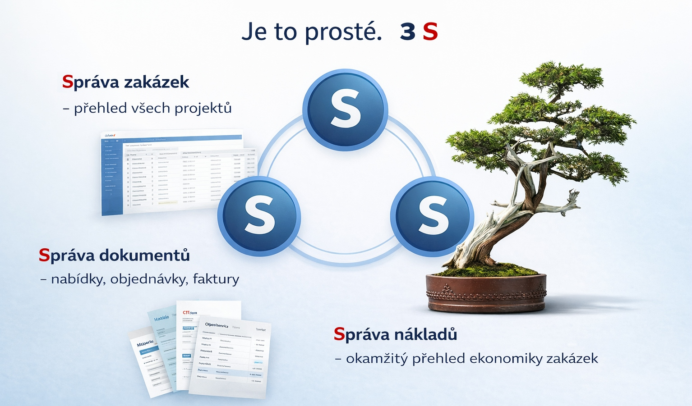

Přečtěte si náš příběh o tom, jak vznikl ThreeS - systém ušitý na míru reálným potřebám reálných firem.
Excel je skvělý nástroj. Ale když firma roste, začnou se objevovat problémy. Více verzí souborů, ztracené dokumenty, nejasné náklady zakázek… Proto jsme jednoho dne v roce 2018 začali vyvíjet vlastní systém, na míru našim potřebám, bez nutnosti investovat už v prvopočátku milion a více peněz za něco, o čemž jsme dopředu věděli, že to stejně pokryje naše požadavky sotva tak z poloviny. Tak vznikl ThreeS.
Systém má svého architekta a stratéga, grafika a testera, a hlavně schopného programátora, který dokáže všechny požadavky současné i budoucí, převést do reálné podoby.
Téměř všechny funkcionality ThreeSu jsou známé z jiných systémů, my jsme však udělali to, že jsme nejen skloubili mnohé funkce různých programů do jediného, ale hlavně k nim přidali řešení (nejen) našich specifických požadavků.
ThreeS není produkt velké korporace. Je to zhmotnění příběhu lidí a vyvíjený dlouhodobě s firmami, které pracují na zakázkách. Také díky tomu je možné jej přizpůsobit konkrétním potřebám každého uživatele.

Bonsai, která je symbolem ThreeS, není náhodná. Stejně jako ona postupně získává svůj tvar díky pravidelné a dlouhodobé péči svého majitele, máte i vy v každodenním fungování vaší firmy potřebný přehled, kontrolu a řád - a to díky ThreeS.